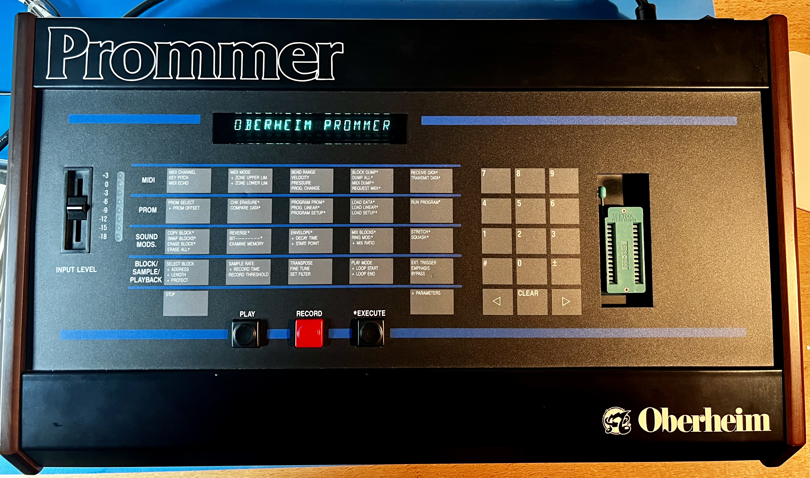

1984
Oberheim Electronics
Oberheim Prommer
The EPROM 'toaster' that let you burn your own drum sounds into a chip — a programmer you could audition by ear

Overview
Deep dive
Media

The EPROM 'toaster' that let you burn your own drum sounds into a chip — a programmer you could audition by ear
